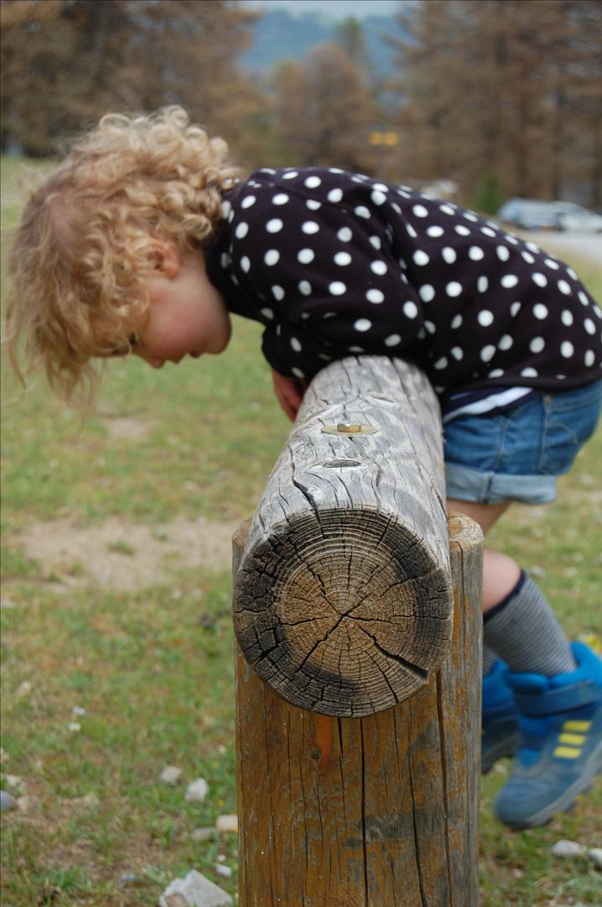

Wat bieden wij aan?
Een (avond)cursus op maat gemaakt. Deze cursus is toegespitst op vragen van:
Kraamzorg
Inmiddels weten we hoe belangrijk een juiste hantering en positionering bij pasgeborenen is, zowel voor prematuur geboren kindjes als voor à terme geboren kinderen. Hoe handel je bij excessief huilen, bij motorische onrust en bij overstrekken? Welk advies kun je aan ouders geven? Welke hulpmiddelen hebben meerwaarde, en welke juist niet?
Kinderdagverblijf
Wat verstaan we onder een normale motorische ontwikkeling? Welke mijlpalen horen bij welke leeftijd?
Wat is een afwijkend motorisch beloop? Wat zijn alarmsignalen? Hoe stimuleren we bepaalde motoriek? Welk spelmateriaal kun je wanneer inzetten?
Peuterspeelzaal
Wat verstaan we onder een normale motorische ontwikkeling? Welke mijlpalen horen bij welke leeftijd?
Wat is een afwijkend motorisch beloop? Wat zijn alarmsignalen? Hoe stimuleren we bepaalde motoriek? Welk spelmateriaal kun je wanneer inzetten?
Basisschool
Welke motorische vaardigheden moeten kleuters al beheersen? Wanneer spreek je van een motorische achterstand? Schrijfproblematiek zien we steeds vaker, hoe signaleer je tijdig en wat kun je eraan doen? Welke schrijfhulpmiddelen hebben meerwaarde, en welke juist niet?
Consultatiebureau
De nieuwste inzichten op het gebied van voorkeurshouding en helmredressie. Welk advies geef je aan ouders over hantering en positionering bij overstrekken, excessief huilen en/of motorische onrust.
Onze cursus voor de kraamzorg is geaccrediteerd door het kenniscentrum kraamzorg. De cursus is 3 punten waard en inschrijven kan via de volgende link:
https://www.pe-online.org/public/OpleidingDetail.aspx?courseID=372753&pid=341
Kennis op het gebied van de motorische ontwikkeling helpt bij vroegtijdige signalering en speelt een belangrijke rol bij de advisering van ouders.
Onderwerpen
Voor elke beroepsgroep hebben wij presentaties gemaakt met daarin de onderwerpen waarvan wij denken dat ze toegevoegde waarde hebben binnen dat vakgebied. Wij staan open voor een andere invulling van de cursusavond. Wij horen daarom ook graag welke andere onderwerpen de voorkeur hebben om te bespreken.
Denk hierbij aan:
Staan hier onderwerpen niet benoemd, maar zou u hier toch graag meer over willen weten?
Vraag het ons gerust!
Uitbreiding?
Het is mogelijk om na een eerste cursusavond te kiezen voor een aanvullende module met meer verdieping. Denk hierbij aan het bekijken van extra filmateriaal of het bespreken van specifieke casuïstiek.
TIP: We bieden ook een cursusavond over de sensorische informatieverwerking bij kinderen van 0-10 jaar, dit kan een interessante en waardevolle aanvulling zijn op de cursus over de motorische ontwikkeling.
